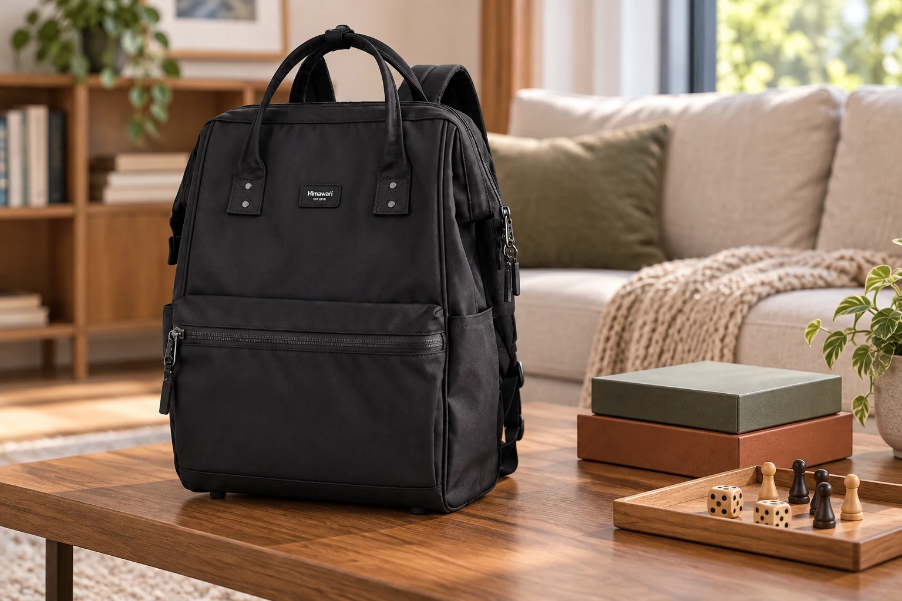

보드게임 상자를 담을 백팩, 뚜껑까지 닫힌 모양으로 고르기

친구 모임에 보드게임 한 상자를 가져갈 때 백팩 옆에 상자를 대보게 됩니다. 가방 높이가 더 크고 폭도 비슷해 보이면 들어갈 듯합니다. 실제로 담을 때에는 상자의 단단한 모서리와 닫힌 뚜껑, 입구를 통과하는 방향이 영향을 줍니다. 닫힌 상자와 평소 소지품이 같은 가방에서 각각 꺼내질 수 있는지 비교해봅니다.
상자는 게임과 보관품의 안내에 맞게 정리하고 완전히 닫힌 외형을 봅니다. 별도 커버나 운반품을 쓰는 경우에는 그것을 포함합니다. 뚜껑이 바닥 상자보다 넓거나 손잡이가 추가되면 실제로 지나갈 모양도 달라집니다. 인터넷에 적힌 상자 규격이 어느 상태를 말하는지 불분명하면 자신의 준비된 상자를 직접 확인할 수 있습니다. 게임의 수보다 가장 큰 운반 묶음의 모양이 가방 선택의 출발점입니다.
상자는 가방 원단처럼 모양을 바꾸지 않는다
부드러운 옷은 빈 공간을 따라 놓을 수 있지만 단단한 상자는 모서리 방향이 남습니다. 백팩 입구로 상자를 비스듬히 넣어야 한다면 안쪽에서 다시 돌릴 공간도 있어야 합니다. 높이와 너비의 숫자 두 개가 맞는다는 이유로 그 경로를 알 수는 없습니다. 가방을 들고 다닐 방향에서 상자가 어떻게 놓이고 다시 꺼내지는지 살펴봅니다.
빈 상자나 같은 외형의 보관품으로 확인할 수 있다면 사용 가능한 범위에서 먼저 입구를 비교할 수 있습니다. 내용물이 들어간 무게와 이동 조건은 실제 구성으로 따로 봅니다. 상자를 강하게 눌러 뚜껑을 좁히거나 가방 지퍼를 당겨 맞추는 동작이 필요하면 현재 조합을 다시 선택할 이유가 됩니다.
상자를 세우는 방향과 넓은 면으로 놓는 방향도 비교할 수 있습니다. 세워 놓을 때 뚜껑이 가방의 곡선에 닿는지, 눕혀 놓으면 다른 짐을 모두 위에 쌓게 되는지 봅니다. 게임의 운반 방향은 해당 안내를 우선합니다. 그 안에서 상자를 꺼낼 방향을 고릅니다. 배치를 위해 상자 안의 정리 방식을 임의로 바꾸는 결정을 먼저 하지 않습니다.
큰 상자 옆에 일상 소지품을 더한다면
백팩에 게임 상자만 넣고 모임에 가는 경우는 드물 수 있습니다. 지갑과 연락 도구, 이동 중 쓸 작은 물건이 함께 남습니다. 상자를 꺼내지 않고도 자주 쓸 물건에 접근할 수 있는지 확인합니다. 반대로 게임 상자를 잡을 때 작은 파우치가 그 위에서 먼저 떨어져 나오는지도 봅니다. 큰 물건 하나가 들어간 상태에서 백팩의 일상 기능이 얼마나 남는지 비교하는 것입니다.
상자 모서리 가까이에 둥근 용기나 단단한 충전 도구를 놓으면 어떤 면이 닿는지 살펴봅니다. 작은 물건을 남은 틈에 모두 밀어 넣기보다 그 소품을 따로 모아 둘 위치를 정합니다. 상자를 잡는 손이 들어갈 여유도 남겨둡니다. 백팩을 닫은 모습이 반듯해 보여도 상자를 꺼내려면 다른 짐을 전부 내려야 한다면 모임 장소에서 사용할 구성이 번거로울 수 있습니다.
Himawari No.1884 블랙의 카탈로그 외부 크기는 대형 1884L 기준으로 30 × 45 × 20cm입니다. 게임 모임에 쓸 후보를 비교할 때에는 이 외부 치수와 내부 공간을 구분합니다. 상자의 실제 크기와 운반 방향을 준비해 입구와 내부 배치에 필요한 정보를 확인합니다. 현재 가져갈 상자의 외형과 잡을 여유를 기준으로 판단합니다.

백팩에 함께 담거나 별도로 들고 가거나
상자를 넣은 뒤 여밈이 자연스럽게 닫히고, 작은 소지품도 자기 위치에서 꺼낼 수 있다면 실제로 들고 이동할 상태를 봅니다. 평소보다 내용물의 무게와 부피가 달라졌으므로 빈 가방의 착용 인상만 유지될 것이라고 기대하지 않습니다. 가방을 메고 내려놓는 동작을 해보며 어디에 단단한 면이 놓이는지 느껴볼 수 있습니다. 조절 가능한 부분은 제품이 안내하는 방식으로 정합니다.
상자가 들어가지 않거나 꺼내는 동작이 어렵다면 별도 가방으로 나눌 수 있습니다. 게임에 맞는 운반품의 사용 범위를 확인하고, 백팩에는 개인 소지품을 남기는 방식입니다. 손에 든 가방이 하나 늘면 출입구나 모임 자리에 도착했을 때 어느 것을 먼저 내려놓을지도 정합니다. 상자를 백팩의 지퍼 장식에 매달아 공간을 늘리기보다 각 가방의 원래 운반 방식을 따릅니다.
게임 상자를 분리해 가져갈지 고민할 때는 장소에서 가방을 어디에 둘지도 생각합니다. 좁은 테이블에서 게임을 펼칠 계획이면 개인 백팩을 함께 열어 두지 않아도 되는 구성이 편할 수 있습니다. 상자는 게임 자리로 가져오고 개인 짐은 안내된 보관 위치에 두는 흐름을 선택할 수 있습니다. 같은 활동에 쓰는 짐이라고 모두 한 가방에서 동시에 나와야 하는 것은 아닙니다.
여러 게임 가운데 가져갈 것을 고를 수 있다면 모임 계획과 운반 조건을 함께 대조합니다. 가방에 맞추려고 필요한 구성품을 임의로 빼기보다 원래 닫힌 상태로 옮길 수 있는 게임을 고를 수 있습니다. 가져갈 게임이 이미 정해졌다면 운반 방법을 바꿀 차례입니다. 상자를 줄이는 결정과 가방을 바꾸는 결정을 구별하면 어떤 조건을 조정했는지 남습니다.
모임을 마친 뒤에는 정리한 상자를 닫고 실제 귀가 짐과 함께 다시 놓습니다. 출발할 때 없던 자료나 구매품이 늘었다면 상자 위의 빈 공간을 모두 채우기 전에 꺼낼 물건의 위치를 확인합니다. 같은 상자를 가져간 날에도 돌아오는 가방의 구성은 달라질 수 있습니다. 뚜껑이나 모서리를 눌러 여밈을 맞추게 되면 새로 추가된 묶음을 나누어봅니다.
다음 모임 준비를 위해서는 어떤 게임이었는지와 함께 어느 상자를 어떤 방향으로 담았는지 남길 수 있습니다. 상자가 입구에서 걸렸는지, 내부에서는 맞았지만 손이 들어가지 않았는지에 따라 다음 후보의 질문이 달라집니다. 백팩의 바깥 크기만 크게 고르는 대신 필요한 경로와 일상 소지품의 접근을 함께 비교합니다. 닫힌 상자가 자기 모양으로 들어가고 다시 나올 수 있는 가방 구성을 찾아봅니다.